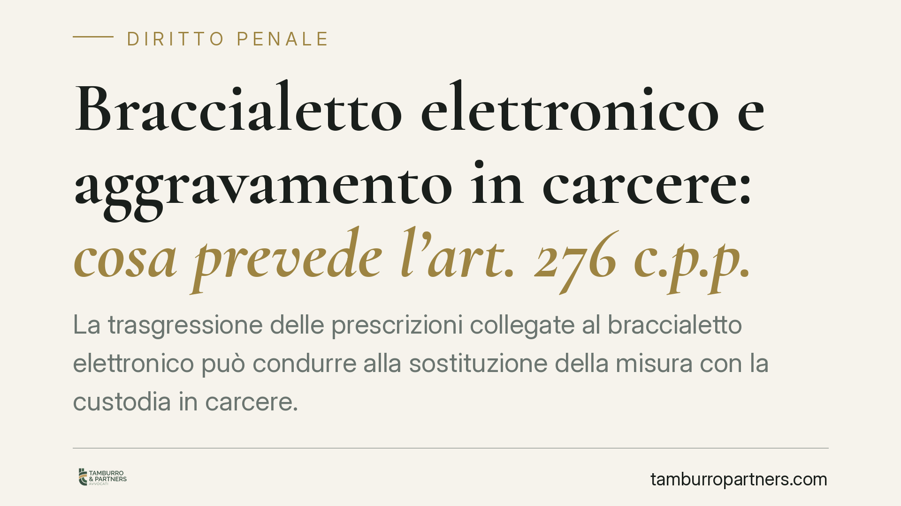

Braccialetto elettronico e aggravamento in carcere: cosa prevede l'art. 276 c.p.p.
La trasgressione delle prescrizioni collegate al braccialetto elettronico può condurre alla sostituzione della misura con la custodia in carcere. Il tema ripropone una domanda ricorrente: l'aggravamento è automatico oppure il giudice deve valutare la gravità concreta della violazione? Facciamo il punto sul quadro normativo vigente e sulle leve difensive realmente disponibili in sede cautelare.

Il contesto
Il braccialetto elettronico è lo strumento di controllo a distanza utilizzato per verificare il rispetto delle prescrizioni imposte con alcune misure cautelari, in particolare gli arresti domiciliari. La sua manomissione, disattivazione o il mancato rispetto delle regole collegate aprono la strada a un possibile inasprimento della misura.
Il punto controverso è se la violazione comporti automaticamente il passaggio alla custodia in carcere, oppure se il giudice conservi un margine di valutazione sulla gravità concreta del comportamento.
> Nota redazionale. La sintesi iniziale faceva riferimento a una pronuncia della Corte costituzionale (indicata come sent. n. 171/2026) su una questione sollevata in sede di riesame. Si tratta di un dato da verificare su fonte ufficiale (sito della Consulta e Gazzetta Ufficiale): non essendone confermabili estremi, data e dispositivo, in questo contributo non ne riportiamo il contenuto. Il quadro che segue è costruito sul testo normativo vigente, l'unico elemento sul quale è corretto ragionare con un cliente.
Inquadramento normativo
L'art. 276 cod. proc. pen. disciplina gli effetti della trasgressione delle prescrizioni imposte con una misura cautelare. In via generale, il comma 1 prevede che il giudice possa sostituire o cumulare la misura con una più grave, tenendo conto dell'entità, dei motivi e delle circostanze della violazione.
Un regime più rigoroso riguarda le ipotesi di trasgressione delle prescrizioni degli arresti domiciliari, per le quali è prevista la sostituzione con la custodia cautelare in carcere. La collocazione esatta e la formulazione testuale di questa disposizione — in particolare l'eventuale clausola che fa salvi i casi di lieve entità — vanno verificate sul testo aggiornato del codice, perché l'articolo ha subito interventi normativi nel tempo. Consigliamo di non dare per scontata una citazione a memoria: in materia cautelare la lettera della norma fa la differenza.
La questione di fondo, da sempre al centro del dibattito, è l'ampiezza del potere valutativo del giudice rispetto a eventuali automatismi. Una lettura costituzionalmente orientata tende a preservare uno spazio di apprezzamento sulla gravità effettiva della violazione, in coerenza con i principi di proporzionalità e adeguatezza che governano l'intera materia cautelare (art. 275 c.p.p.).
Inammissibilità e giudizio di merito: perché non è la stessa cosa
Quando una questione di legittimità costituzionale viene dichiarata inammissibile, la Corte non entra nel merito del problema: non dice se la norma sia conforme o contraria alla Costituzione. Si limita a rilevare un ostacolo processuale — ad esempio una motivazione insufficiente dell'ordinanza di rimessione o la possibilità di un'interpretazione della norma compatibile con la Costituzione.
È una differenza tutt'altro che teorica. Una pronuncia di rigetto o di accoglimento chiude il tema; una pronuncia di inammissibilità lo lascia aperto. Spesso la Corte, pur dichiarando inammissibile la questione, indica che la norma può essere letta in senso conforme alla Costituzione (cosiddetta interpretazione adeguatrice): un'indicazione che la difesa può valorizzare davanti al giudice di merito.
Implicazioni pratiche
Per chi si trova agli arresti domiciliari con braccialetto elettronico, il messaggio operativo è duplice. Da un lato, ogni violazione delle prescrizioni espone al rischio concreto di custodia in carcere. Dall'altro, la difesa può argomentare sulla gravità effettiva della condotta e sulle sue cause.
Assume rilievo centrale la questione dei malfunzionamenti tecnici del dispositivo. Un allarme generato da un problema dell'apparecchio, da un calo di segnale o da un difetto di installazione non equivale a una volontaria sottrazione al controllo. Documentare l'anomalia tecnica è spesso l'elemento difensivo più solido.
Cosa fare in concreto
- Segnala subito ogni malfunzionamento del dispositivo alle forze dell'ordine e annota data, ora e circostanze: una comunicazione tempestiva è prova della buona fede.
- Conserva ogni elemento tecnico utile (segnalazioni ricevute, ricevute di intervento, testimonianze) che possa dimostrare l'origine non volontaria dell'allarme.
- Impugna l'aggravamento nei termini: contro l'ordinanza che dispone o sostituisce la misura è previsto l'appello cautelare ex art. 310 c.p.p.; verifica con il difensore i termini applicabili al caso concreto (per il riesame delle misure coercitive si veda l'art. 309 c.p.p.).
- Chiedi una valutazione sulla proporzionalità: sollecita il giudice a considerare entità, motivi e circostanze della trasgressione, non la sola materialità della violazione.
- Contatta tempestivamente il difensore: in materia cautelare i tempi di reazione sono brevi e incidono direttamente sull'esito.
Resta fondamentale, prima di qualsiasi azione, la verifica puntuale del testo normativo vigente e degli orientamenti giurisprudenziali aggiornati, da condurre sulle fonti ufficiali.
---
Contributo informativo a cura di Tamburro & Partners Avvocati - Avv. Giuseppe Tamburro. Non costituisce parere legale.
Ogni condominio ha una storia a sé.
Se gestisci un'amministrazione e vuoi un confronto su una specifica questione condominiale, scrivi allo studio. Ti rispondiamo entro un giorno lavorativo.